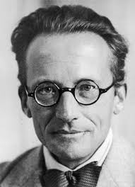
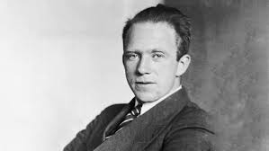

J. Robert Oppenheimer
“The Bhagavad Gita is the most beautiful philosophical song existing in any known tongue.”

“The Bhagavad Gita is the most beautiful philosophical song existing in any known tongue.”

"When I read the Bhagavad-Gita and reflect about how God created this universe, everything else seems so superfluous"
“This life of yours which you are living is not merely a piece of this entire existence, but in a certain sense is the whole.”
His writings show strong influence of Upanishadic ideas on unity and consciousness.


“After the conversations about Indian philosophy, some of the ideas of quantum physics that had seemed so crazy suddenly made much more sense.”
Demonstrates how Indian metaphysics influenced modern scientific thought.
“The Bhagavad Gita is the most systematic statement of the perennial philosophy.”
Highlights the universal philosophical nature of Indian scriptures.